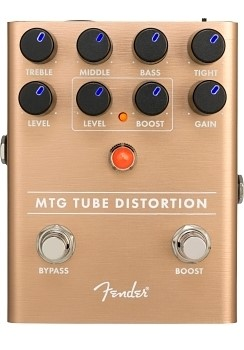
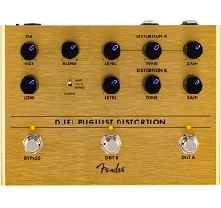

Fiery sounding and flexible, the Pugilist Distortion is ready to add some heavyweight gain to your rig. This original design features dual gain engines - with independent tone controls for each - letting you select multiple variations of distortion, ensuring this pedal will play well with any rig. Series/Blend switch lets you stack channels for thick, cascading distortion, while the Bass Boost switch fattens up your tone. The Blend control mixes the two channels to get the best of both worlds, crafting a sound just for you.
Distortion pedals are the rebels of pedalboards. They can transform a clean tone into a highly saturated, raw, and aggressive full-on sonic assault. However, distortion pedals are much more than just tools for creating obliterating high-gain tones. They are versatile devices that add character, depth, and texture to your sound. You can use them to add a hint of grit to spice up a blues solo, to get a light crunch for classic rock, or simply crank them up for an aggressive metal roar. Their unparalleled ability to redefine guitar tones has made them a mainstay on pedalboards for decades. In this article, we'll dive into the world of distortion pedals, exploring their features, applications, and giving tips for dialing in your ideal tone.
Distortion pedals are gain effects that add dirt and grit to your guitar signal. Depending on the pedal you’re using and how it’s dialed in, you can get anything from a gritty crunch all the way to a heavily saturated high-gain tone.
Cranking a distortion pedal to its limits will produce an extremely saturated sound that is highly compressed. In fact, the “buzzsaw” guitar tone early Swedish death metal is known for was often created with a distortion pedal that had all its controls cranked all the way up.
Cranking a distortion pedal to its limits will produce an extremely saturated sound that is highly compressed. In fact, the “buzzsaw” guitar tone early Swedish death metal is known for was often created with a distortion pedal that had all its controls cranked all the way up.
When used with a clean amp, distortion pedals can work like an additional high-gain channel. For example, the Abasi Pathos distortion pedal is often described as a lead channel in pedal form. With the stomp of a footswitch, your clean sound is transformed to a gritty, saturated tone. This way you can expand the tonal palette of a single-channel clean amp, making it suitable for a wider range of genres and playing styles.
Additionally, the tone control on a distortion pedal lets you shape the frequency response of your distorted signal. By adjusting the knob, you can brighten up your sound so your leads cut through the mix more effectively, or darken it for a warmer and fuller rhythm tone.
Most commonly, distortion pedals are placed early in the signal chain after tuners and dynamic effects like compressors, and before modulation and time-based effects like chorus, phaser, flanger, delay, and reverb. This ensures that the pedal processes a relatively clean and unaltered signal.
When a distortion pedal receives a clean or minimally altered signal, it can most effectively apply its gain structure, harmonic content, and other characteristics that create its voice.
When a distortion pedal receives a clean or minimally altered signal, it can most effectively apply its gain structure, harmonic content, and other characteristics that create its voice.
That said, there's plenty of room for experimentation. Sometimes guitarists flip the script by placing modulation or time-based effects before distortion to create unique sonic textures. For example, running a phaser before a distortion pedal can result in a more pronounced sweeping effect that's blended into the distorted tone.